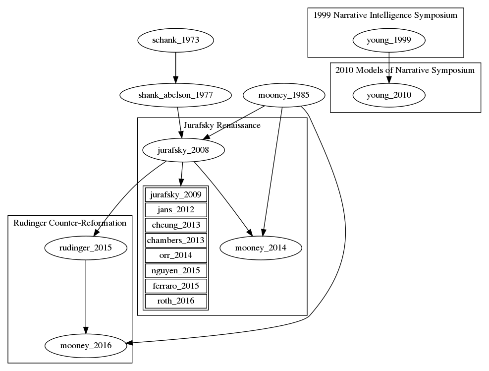

I study the history and contemporary practice of Artificial Intelligence, with a focus on language. This involves, at various times, historical and critical work, text mining, and software engineering and reverse engineering.
Android Linguistics
My dissertation traces the history of the "microworld" as a concept in Artificial Intelligence from the MIT AI laboratory of the 1960s to the present. Borrowed from physics, the term "microworld" refers to a simplified computer simulation of some aspect of reality that an AI agent can explore and use to learn about the more complex "real" world modeled by the simulation. As I argue, the genealogy of the microworld can offer us insight into how the field has historically policed the boundary between the pure science of AI conducted in vitro on simulated microworlds on the one hand, and the complex ethical dimensions of applied science performed in vivo in the real-world deployments of AI technologies that increasingly mediate our finances, our justice system, and our roadways on the other. At stake, I contend, is our ability to ensure the most humane use of AI technologies, which will require not only policy and regulatory solutions but also a reconceptualization of the nature and role of science in the study of society and the production of technology, and a rethinking of the conception of the human on which AI science is based.
From Kant to Kansei
Affective computing frames itself as a the computational science of all things emotion. Yet, in pursuing universal cognitive bases for emotional responses in facial gestures, vocal tonality, and color perception, it has charted an often winding course through emotional concepts as it crosses national and cultural boundaries. This project traces the path of the Japanese concept of kansei, or aesthetic sensibility, as it charts a course from Kantian aesthetics, through the Tokyo philosophical school, through industrial product design, and ultimately into contemporary affective computing. Throughout this exploration, the question is raised of what it means to compute on emotion.
Textmining the History of AI
As a founding member of the Duke Text Mining Collaboratory, I am conducting research into applying text mining techniques to study the evolution of the field of AI. In particular, I am interested in how new research topics are proposed and justified on the authority of fields outside of AI. To that end, I study how ideas and texts from the humanities, social sciences, natural sciences, and culture more widely enter and circulate within the scientific discourse of AI. This work aims to augment citation analysis and attendant notions of "scientific influence" with a richer understanding of how discursive formations function. I am also supervising a team of students using text mining to explore the history of excess profits legislation to discover how and when discourses of "just prices" gave way to contemporary free market logics.
Programmable Hypertext for Research Collaboration
I am in the process of developing, as part of a currently held fellowship, a hypertext system aimed at distributed teams conducting research independently but on overlapping topics. The system captures documents and other findings from distributed team members, and applies natural language processing to assemble those independently captured documents into dynamically generated wiki pages representing everything known by the team collectively about a given topic. Because the pages are generated dynamically, the usual organizational overhead of maintaining a wiki is greatly reduced. As an added benefit, pages can be composed and transformed on the fly in response to user queries, allowing a variety of views on the captured knowledge, from lists, to hyperlinked pages, to histograms.
Learner Behavior in Online Education
I will be collaborating with a team from Coursera to analyze clickstream and text data to better understand user behavior in online educational MOOC environments. I will further be working to propose A/B tests and other interventions to improve the experience of online education.
Probabilistic Logic Programming in MiniKanren
Along with others, I have been working on extending the miniKanren logic programming language with probabilistic operators. This will allow an extension of miniKanren's program synthesis functionality to handle problems in natural language processing. Applications include language engines for video game NPCs and natural language interfaces that mix classical planning with statistical language processing. In particular, I hope to use such an augmented MiniKanren language in the design of natural language interfaces to medical ontologies and medical literature databases for use in precision medicine research, as part of the MediKanren system.